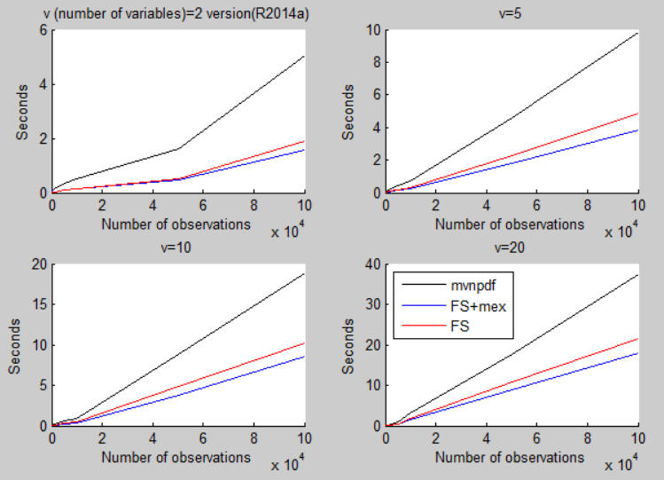
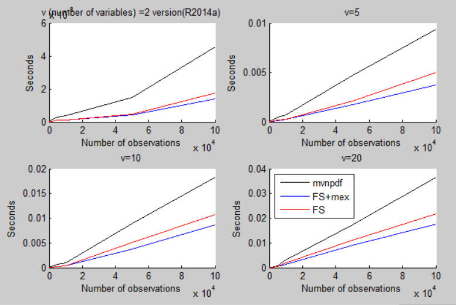

| Flexible Statistics Data Analysis Toolbox™ | |
log of Multivariate normal probability density function (pdf)
This function is a much faster version than (log of) Matlab function mvnpdf
y = logmvnpdfFS(X,Mu,Sigma)
y = logmvnpdfFS(X,Mu,Sigma,X0,eyed,n,d)
y = logmvnpdfFS(X,Mu,Sigma) returns the log-density of the multivariate normal distribution with mean Mu and covariance Sigma, evaluated at each row of X. This syntax uses matlab function bsxfun to compute the deviations form the means and no mex function.
y = logmvnpdfFS(X,Mu,Sigma,X0,eyed,n,d) must be used if logmvnpdfFS is repeatedly called. This sintax uses to compute the deviations from the means a mex function obtained using C code DfM.c In this case X0 is another matrix of the same size of X, eyed is an identity matrix of size length(Mu), n is a scalar associated to the number of rows of X and d is a scalar associated with the number of columns of X.
The details are as follows: in order to compute the kernel of the quadratic form at the exponent logmvnpdfFS creates an identity of size length(Mu) and similarly needs to compute length(Mu). These two quantites can be precalculated and supplied as input parameters. If logmvnpdfFS has to be called thousands of times (as it happens for example in each iteration of all procedures of cluster analysis based mixtures of multivariate gaussian distributions). The same argument above applies to scalars n and d which are directly passed to the compiled mex function.
In the examples below we compare the speed of the different solutions.
In this example we check the agreement of the results with MATLAB function mvnpdf
n=20000;
X=randn(n,2);
mu = [1 -1]; Sigma = [.9 .4; .4 .3];
y = logmvnpdfFS(X, mu, Sigma);
y1=log(mvnpdf(X,mu,Sigma));
max(abs(y-y1))
TIME COMPARISON USING TIC TOC
logmvnpdfFS with mex function and logmvnpdfFS without mex function
% In this code computation time is based on tic toc combined with a series
% of replications
% nn = sample size
% vv = number of variables
nn=[100 200 500 1000 5000 10000 50000 100000];
vv=[2 5 10 20];
% rep =number of replications
rep = 1000;
ttMat=nan(length(nn) , length(vv));
ttFSwithMex=ttMat;
ttFSnoMex=ttMat;
Mat=0; tMat=0;
FSwithmex=0; tFSwithMex=0;
FSnoMex=0; tFSnoMex=0;
in = 1; iv=1;
for n = nn
for v = vv
X0 = zeros(n,v);
eyed=eye(v);
for i=1:rep
X = randn(n,v);
Mu = randn(1,v);
Sigma=cov(X);
% Matlab function mvnpdf, (black line in plot)
Mat = tic;
y0 = mvnpdf(X, Mu, Sigma);
y0=log(y0);
tMat = tMat + toc(Mat);
% logmvnpdfFS using mex file for mean deviations, (blue line in plot)
FSwithmex = tic;
yD = logmvnpdfFS(X, Mu, Sigma,X0,eyed,n,v);
tFSwithMex = tFSwithMex + toc(FSwithmex);
% logmvnpdfFS and no mex file for mean deviations. (red line in plot)
FSnoMex = tic;
yI = logmvnpdfFS(X, Mu, Sigma);
tFSnoMex = tFSnoMex + toc(FSnoMex);
if (sum(sum(abs(y0-yD))))>10^-6 || (sum(sum(abs(y0-yI)))) >10^-6
error('Difference in results: stop');
end
end
ttMat(in,iv) = tMat;
ttFSwithMex(in,iv) = tFSwithMex;
ttFSnoMex(in,iv) = tFSnoMex;
Mat=0; tMat=0;
FSwithmex=0; tFSwithMex=0;
FSnoMex=0; tFSnoMex=0;
disp(['n=' num2str(n) ' -- v=' num2str(v)]);
iv = iv+1;
end
in = in+1;
iv = 1;
end
% Plotting part
a=ver;
a=a.Release;
aa=1;
bb=8;
for ij=1:length(vv);
subplot(length(vv)/2,2,ij)
hold('on')
plot(nn(aa:bb)',ttMat(aa:bb,ij),'k');
plot(nn(aa:bb)',ttFSwithMex(aa:bb,ij),'b')
plot(nn(aa:bb)',ttFSnoMex(aa:bb,ij),'r');
if ij==1
title(['v (number of variables)=' num2str(vv(ij)) ' version' a])
else
title(['v=' num2str(vv(ij))])
end
ylabel('Seconds')
xlabel('Number of observations')
if ij==4
legend('mvnpdf','FS+mex','FS','location','NorthWest')
end
end
hold off;

TIME COMPARISON USING TIMEIT FUNCTION
Remark: this function is present from MATLAB 2013b
% nn = sample size
% vv = number of variables
nn=[100 200 500 1000 5000 10000 50000 100000];
vv=[2 5 10 20];
ttMat=nan(length(nn) , length(vv));
ttFSwithMex=ttMat;
ttFSnoMex=ttMat;
in = 1; iv=1;
for n = nn
for v = vv
X0 = zeros(n,v);
eyed=eye(v);
X = randn(n,v);
Mu = randn(1,v);
Sigma=cov(X);
% Matlab function mvnpdf
yMat = @() log(mvnpdf(X, Mu, Sigma));
tMat = timeit(yMat);
% logmvnpdfFS using mex file for mean deviations.
yFSwithMex = @() logmvnpdfFS(X, Mu, Sigma,X0,eyed,n,v);
tFSwithMex = timeit(yFSwithMex);
% logmvnpdfFS and no mex file for mean deviations.
yFSnoMex = @() logmvnpdfFS(X, Mu, Sigma);
tFSnoMex = timeit(yFSnoMex);
ttMat(in,iv) = tMat;
ttFSwithMex(in,iv) = tFSwithMex;
ttFSnoMex(in,iv) = tFSnoMex;
disp(['n=' num2str(n) ' -- v=' num2str(v)]);
iv = iv+1;
end
in = in+1;
iv = 1;
end
%% Plotting part
a=ver;
a=a.Release;
aa=1;
bb=length(nn);
for ij=1:length(vv);
subplot(length(vv)/2,2,ij)
hold('on')
plot(nn(aa:bb)',ttMat(aa:bb,ij),'k');
plot(nn(aa:bb)',ttFSwithMex(aa:bb,ij),'b')
plot(nn(aa:bb)',ttFSnoMex(aa:bb,ij),'r');
if ij==1
title(['v (number of variables) =' num2str(vv(ij)) ' version' a])
else
title(['v=' num2str(vv(ij))])
end
xlabel('Number of observations')
if ij==4
legend('mvnpdf','FS+mex','FS','location','NorthWest')
end
end
hold off;

| |
lga.html | lxs.html | |